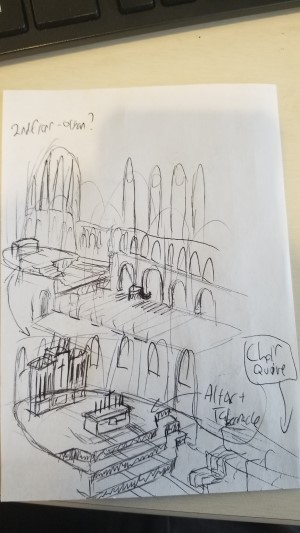
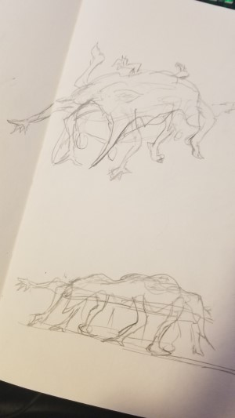

Phantom Frame

Proposal
High Concept
While fleeing from a mysterious invisible enemy the player will use their magic camera to take photos of it and incriminating evidence.
Genre
Phantom Frame is a first person survival horror game. The player can't actually "defeat" the monster so it has elements of a stealth game as well.
Platform
Phantom Frame will be desktop only.
Story
Phantom Frame’s protagonist is a hard-boiled detective investigating supernatural happenings in her city. The monsters here are very real, and only she can prove it with photos from her special camera that can somehow “see” these supernatural entities. Each monster she exposes leads her closer to an unsettling truth: these cases are related and she might just be the next target!
Aesthetics
The visual and narrative style will be based on that of old noir detective movies and comics, with black and white rendering (with maybe some splashes of red) complemented by gritty textures and a lot of smooth jazz playing in the background. Levels will be accompanied by our protagonist giving long, moody, metaphor-filled monologues about the case as she uncovers more information. The game will likely be set in or around the 1950s, which will determine objects and architectural style for our models. Also, it always rains in this city. Sound will be very important in the game as the monster can't be seen by normal methods. Any movements made by the monster need to be represented with sound. Player actions will also give auditory feedback: taking a picture, walking etc.
Gameplay
Mechanics
The primary mechanic is the magic Polaroid. The player can take photos (which take a moment to develop) of pieces of "evidence" scattered around the level. These photos can also reveal the position of the the hidden monster. The other primary mechanic is the sound the player produces. The first monster will be blind, but can be alerted by a noisey player.
Control
The game will be played with mouse and keyboard. Standard fps controls will be used: WASD for movement, right click to look down the viewfinder of the camera, and left click to take a photo. Moving the mouse will move the camera and allow the player too look around. I don't intend to include the ability to jump so that should be everything.
Player Learning
The player will need to learn to take photos only when they appear to be "safe" (in an area where the monster is not around) because the sound of their camera could alert it. The camera will also have limited "ammo" so the player will have to plan their paths through the level to be able to get back to a place where they can reaload their camera with more film. The best strategy will probably be to move slowly and methodically through the level while listening closely for sounds of the monster approaching. One part that will likely give the player trouble is learning not to run away at full speed if they encounter the monster as the sound of their footsteps would cause the monster to follow them.
Screenshots
 About the Developer
I'm Davis Snider, a 3rd(ish) year GDD major. I love game design and gameplay programming and have a lot of experience in Unity and Unreal Engine (and thus C# and C++). I'm a little rustier on web development, but I'm getting there!